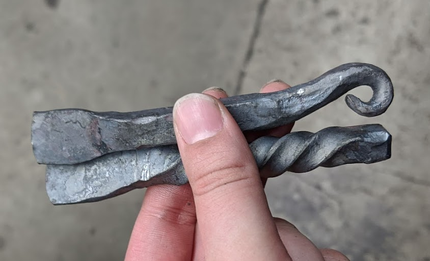
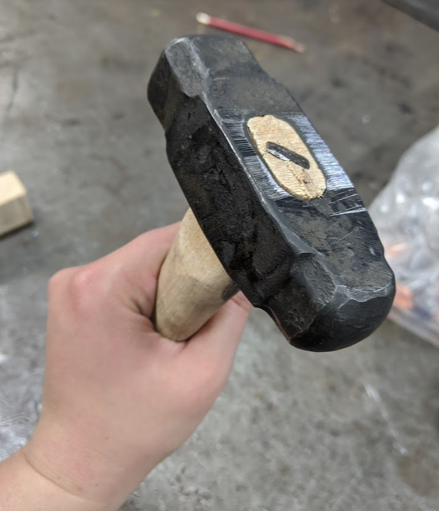
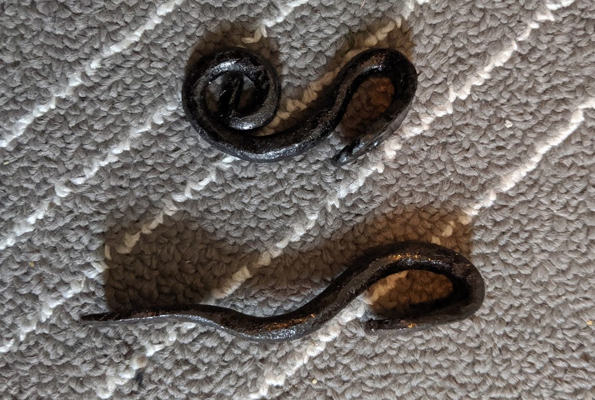

Making a hammer
In one of the classes I took, I made a hammer. I later used it to try and make some bottle openers (they didn't turn out great, so only the in progress is shown :) ) but I do know it works as a hammer now!


Scrolls
One of the things that we learned in Blacksmithing II was making scrolls. Unfortunately I still haven't quite finished my project from Blacksmithing II... until I do that here are some snakes I'm rather proud of: a keychain that I wear, and a plant snake for my snake plant.
The Future
I'm currently taking a bladesmithing class. I've also promised a few people some bottle openers. I've made a few bottle openers now, but nothing that I'd want to gift someone.